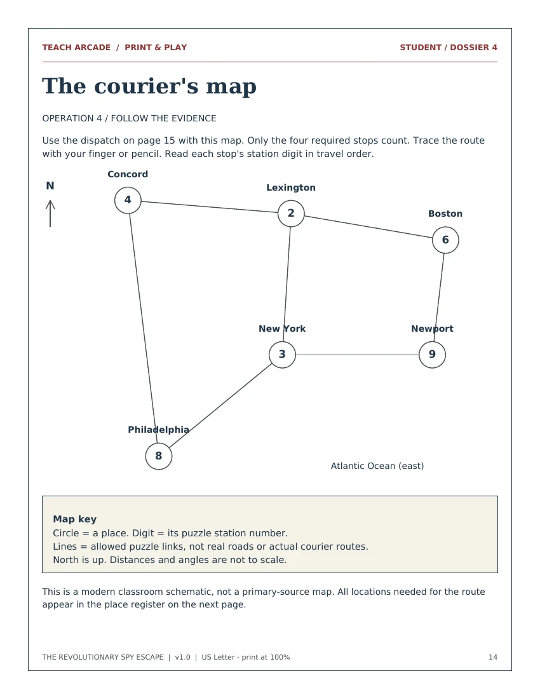

The intercepted dispatch
Use a paired-alphabet strip to decode a message about taxation and representation.
PRINT & PLAY / MISSION 001
A Printable Classroom Escape Room Adventure
An intercepted dispatch. A broken archive. Four dossiers standing between your team and the final Patriot password.
Fully Printable. Fully Playable.
No Technology Required.
Teacher download includes solutions. Print only the designated student pages for teams.

THE MISSION
It is August 1776. In this fictional adventure, your team joins a Patriot spy network to recover information intended for General George Washington. Decode a message, rebuild a timeline, compare political loyalties and follow a courier map.
Each solution earns a teacher-verified paper clue. Combine all four clues to unlock a final password—then discuss what liberty meant, and whom it still excluded.
Real historical events. Invented spy story. All evidence needed to solve the puzzles is included in print. No websites, QR codes, digital locks or purchased padlocks.
FOUR DOSSIERS / FOUR DIFFERENT INTERACTIONS
Use a paired-alphabet strip to decode a message about taxation and representation.
Arrange five event cards from protest to independence. Their seals reveal the next code.
Sort six fictional viewpoints into Patriot, Loyalist and neutral positions using evidence.
Match events to places and trace a route across a printable schematic map.
INSIDE THE PACKET / SPOILER-FREE STUDENT SAMPLES

READY FOR A SUBSTITUTE, TOO
Per team: 10 single-sided student sheets, 11 cut-apart cards, four dossier bundles. Add eight teacher sheets once per class.
For 28 students in seven teams: 78 sheets and 77 cut rectangles. Plan about 20-30 minutes for first assembly. Envelopes are optional; folded sheets or clips work.
During play: four brief code-and-evidence checks and one final check per team. Teachers retain and release the dossiers in order.
Prep and play times are estimates awaiting classroom testing. The packet uses ordinary US Letter paper and remains usable in grayscale.
Chronology from 1765-1776; causes and consequences; taxation and representation; interpreting political viewpoints; Revolutionary-era geography; collaboration and evidence-based explanation. The printed reference material supports students who are still learning the content.
A team gives the teacher its code and reasoning. After verification, the teacher writes a letter fragment and its numbered slots into the log, initials it and releases the next dossier. All four checks are needed for the final unlock. No physical locks are required.
Yes. Download and print before class. Every instruction, historical reference, hint, code and answer needed to run the activity is in the packet. Students need only paper and pencils.
Read directions aloud, rotate roles, allow oral explanations or a scribe, enlarge pages, pre-cut cards and offer printed hints. A shortened 25-30 minute version uses stronger hints while preserving all four puzzles. See the teacher guide.
The events and places are historical; the spy network, dispatches, characters and courier route are invented. The packet labels its fictional documents and includes teacher source notes.
YOUR CLASSROOM. THEIR MISSION.